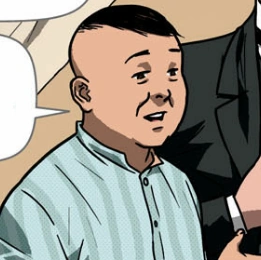
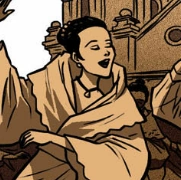
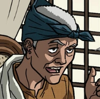

| Characters in Noli Me Tangere |
 |
Crisostomo Ibarra |
- He is the son of a rich man named Don Rafael who recently passed
- He is a knowledgeable man who is the love interes tof Maria Clara
|
 |
Maria Clara |
- She is the daughter of Kapitan Tiago
- She is the love interest and childhood friend of Crisostomo Ibarra
|
|  |
Kapitan Tiago |
- He took care of Maria Clara and acted as her father figure
- Very religious person
|
|  |
Donya Pia Alba |
- Mother of Maria Clara
- Wife of Kapitan Tiyago
|
|  |
Pilosopong Tasio |
- He is a well educated old man and was called crazy for always studying
- After his wife died, he spent his days reading books thus how he got his name Pilosopo
|
 |
Sisa |
- She is the mother of Basilio and Crispin
- She was abused by her Husband
|
 |
Basilio |
- He worked at a local Church despite his young age
- He works hard to get his family out of poverty
|
 |
Crispin |
- He is Basilio's brother and like him, he worked at their local Church
- He is the youngest sibling in their family
|
 |
Padre Damaso |
- An evil old Spanish priest who is strict to the Filipinos
- He was once the leader of the Church until he was replaced by Padre Salvi
|
 |
Padre Salvi |
- An evil priest that was punishing the people that went against him
- Replaced Padre Damaso as the leader of the Church and became the most powerful in San Diego
|